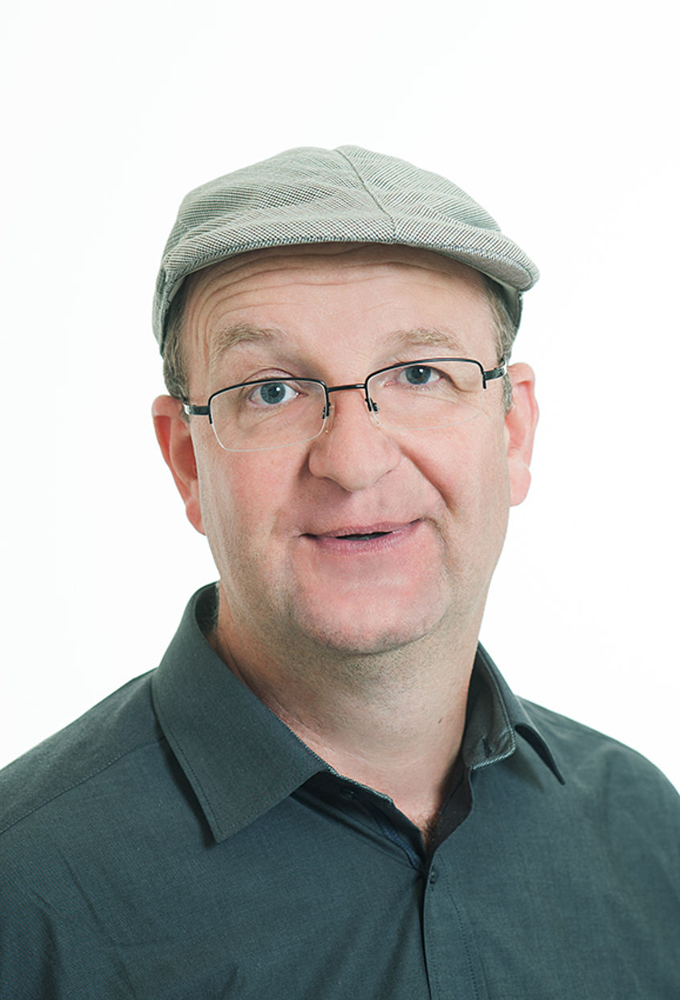

Thibault Leroy
Evolutionary biologist
 We deeply mourn the loss of Christian Lexer, head of our lab and division (Systematic and Evolutionary Botany, University of Vienna), who prematurely and entirely unexpectedly passed away on the 15th of December 2019. Christian was an outstanding evolutionary biologist and botanist, a role model for all of us. He was also an ideal everyday colleague, working closely with all his team. Christian was also an incredibly supportive academic professor for the Viennese students in botany and evolutionary biology, developing positive teacher–student relationships. My thoughts go to his family – his two children and wife - , his friends and our whole lab who have endured with immense courage these painful moments.
I am a population geneticist, currently employed as a full-time university assistant at the department of Botany & Biodiversity research, University of Vienna, Austria. My research is focused on the study of evolutionary forces: gene flow, drift, mutation and selection and their relative importance in divergence and speciation. I have particularly studied fungal, plant and animal models for that purpose. My interests also include genomics - in its broader sense - and statistical methods for population genetics.
Contact:
Thibault (Tibo) Leroy -
Email
Department of Botany and Biodiversity Research
University of Vienna, Faculty of Life Sciences
Rennweg 14, A-1030 Vienna, Austria
Webpage Univ. Vienna